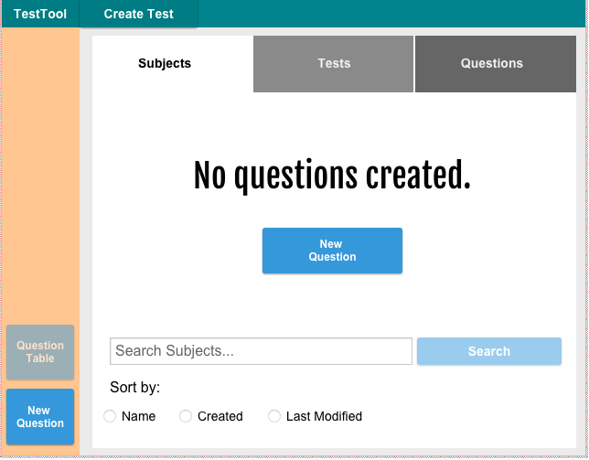

The question bank serves as the record for all of the instructor's saved questions. The instructor has the option of viewing the selection of questions in either a tabular format, or using a search screen that allows navigation of questions by subject or test. From either of these screens, the instructor can edit the saved questions, or create new questions.

Figure 1: Empty Question Bank.
The instructor's question bank appears empty because he or she has not yet created any questions. Clicking either of the "New Question" buttons will generate a new question that is then placed in the Question Bank.